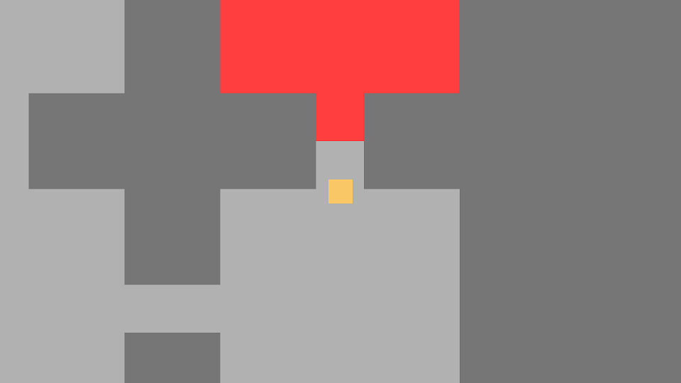

Projets
Unity A* Pathfinding dans un environnement construit en temps réel (2021)
Vidéo de démonstration
Le but de ce projet était de pouvoir travailler sur un environnement construit en temps réel dans lequel des entités peuvent se déplacer. Cela m'a permis de travailler sur un projet de courte durée dans un environnement 3D, n'ayant au moment du projet pas assez de temps et d'idées pour me consacrer à la création d'un jeu complet qui utiliserait ceci. Comme montré dans la vidéo de démonstration, l'environnement est intégralement construit par l'utilisateur, et les entités peuvent alors s'y déplacer. N'ayant pas de but précis, elles choisissent aléatoirement un point du graphe, recherchent leur chemin pour s'y rendre, puis suivent celui-ci. Si le chemin est brisé en cours de route, un nouveau est calculé.
Unity CI Test Project (2021)
Ce projet est une introduction à l'utilisation des actions Github pour mettre en place un projet Unity utilisant l'Intégration en Continu. Il utilise des actions déjà existantes pour mettre en place le flux de travail afin de faire tourner des test Unity puis de générer un build pour différentes plateformes.
Currency tracker (2020 - 2021)

Sur la droite, des informations additionnelles pour des monnaies du jeu (quantitée possédée)
Currency tracker est un Add-On pour The Elder Scrolls Online. Cet Add-On utilise l'API du jeu pour traqué des monnaies particulières du jeu afin de prévenir le joueur quand la quantité possédée atteint un seuil défini par le joueur. Cet Add-On est écrit dans le language de script LUA.
Initiation à la génération procédurale (2019)
Une carte en grille générée procéduralement
Ce projet était une introduction à la génération procédurale. C'est un petit jeu où le but est d'atteindre la salle rouge, ce qui finit la partie. Il est alors possible de rejouer, ce qui augmente la taille de la carte. Chaque salle est un carré avec de une à quatre entrées, toutes les salles étant liées entre elles. La salle rouge est l'une des salles de la carte, choisie de manière aléatoire.